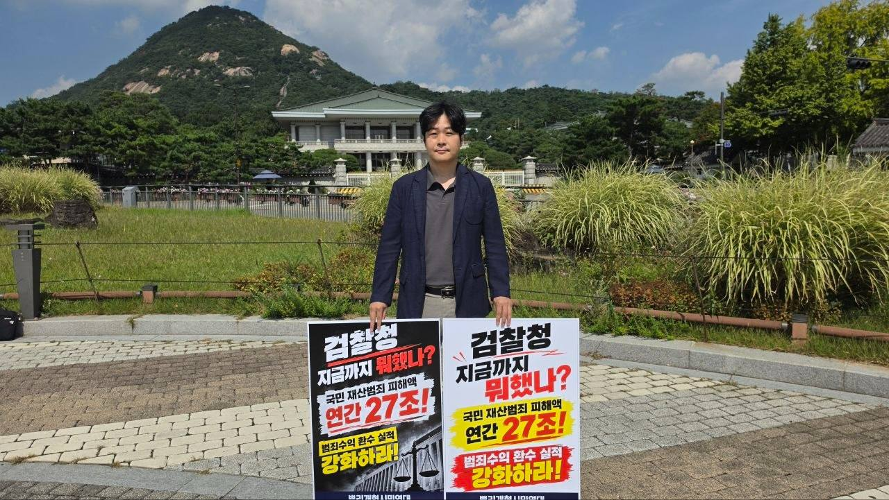

범죄자를 잡아도,
범죄수익은 그대로
범죄로 벌어들인 돈 중 실제로 추징하는 비율은 1%에도 미치지 못합니다.
누적 미납 추징금 (2025.8 기준)
33조 1,800억 원
연간 집행률 (2025년)
0.27%
법무부 자료(박은정 의원실 제출) 기준 · 2020~2024년 집행률도 0.32~0.48%로 5년째 1%를 넘지 못함
서명하러 가기이것은 구조적 악순환입니다
집행 인력의 한계, 모호한 추징금 산정 기준, 은닉재산 추적의 실효성 부족이 서로 맞물려 악순환을 만듭니다.
수사와 재판은 끝나지만 돈을 회수하는 절차는 끝까지 가지 못하고,
그 사이 범죄수익은 숨겨지고 시간이 지나 소멸합니다.
아래 사례들은 예외적인 실패가 아니라 같은 구조가 반복된 결과입니다.
'박사방' 조주빈 사건
확정 1억 800만 원 → 집행 7만 원
전두환 전 대통령
미납 867억 원 · 사망으로 채무 소멸
우리은행 700억대 횡령
추징 약 647억 원 확정 · 환수 불투명
초대형 성매매 알선 업소
매출 650억 원 중 추징금은 3억 원(단 0.5%)
단체 소개
이 돈은 사라진 게 아니라,
누군가의 손에 남아있습니다
뿌리개혁시민연대는 범죄수익 환수 제도의 공백을
감시하고 바로잡기 위해 모인 시민들의 모임입니다.
특정 정당이나 이해관계에 속하지 않으며, 기록과 숫자로만 말합니다.
문제의 본질은 단순합니다.
범죄로 벌어들인 돈은 판결문과 함께 사라지지 않습니다.
국가가 추징하지 못한 돈은 여전히 차명의 이름으로 남아,
다음 범죄의 자본이 됩니다.
우리는 자료를 청구하고, 수치를 검증하고, 개선안을 만들어
국회와 정부에 전달합니다.
서명운동과 현장 행동으로 시민의 목소리를 모으고,
진행 상황을 공개적으로 기록합니다.
목표는 하나입니다. 범죄로는 수익이 남지 않는 나라.
하는 일
입법·정책 조사 및 개선안 제안
현행 몰수·추징 제도의 허점을 자료로 정리해 구체적 법안 형태로 제안합니다.
범국민 서명운동 및 입법청원
시민 서명을 모아 국회에 입법청원으로 제출하고 처리 경과를 공개합니다.
1인 시위 및 현장 행동
국회·법무부·검찰청 앞에서 환수 실태를 알리는 상시 행동을 이어갑니다.
여론 형성 및 언론 대응
검증된 수치를 언론과 시민사회에 제공해 논의가 사실 위에서 이뤄지게 합니다.
실태조사 및 모니터링
정보공개청구로 집행 현황을 추적하고 매년 변화를 기록으로 남깁니다.
이렇게 바뀌어야 합니다
정부와 국회에 요구하는 다섯 가지 과제입니다.
각 중수청에 범죄수익환수부 설치 / 현장 전담 수사단 확대
추징금 환수 전담 조직을 확대합니다.
환수 현황 실시간 공개
사건별 확정액과 집행액을 정기적으로 공개해 감시가 가능하게 합니다.
추징금 산정기준 법제화
범죄수익에서 필요경비를 공제하는 관행을 폐지하고 기준을 법으로 정합니다.
모든 범죄에 대한 독립몰수제 도입
성매매 알선 등 모든 범죄에 대한 범죄수익을 몰수합니다.
성과급·포상금 확대
은닉재산 추적 실적과 시민 제보에 실질적인 보상을 연결합니다.
추징금, 더 적극적으로 추징하십시오
범죄로 벌어들인 돈 중 실제로 추징하는 비율은 해마다 1%에도 미치지 못합니다. 판결문에 추징금이 적혀도 집행되지 않으면 범죄수익은 그대로 남습니다. 저희는 다음 세 가지를 요구합니다.
- 추징금 환수 전담 조직(범죄수익환수부)을 확대하고, 판결 확정 전에 재산을 묶어두는 추징보전을 적극 활용할 것
- 사건별 선고액, 집행액, 미집행 사유를 정기적으로 공개할 것
- 도피, 사망, 시효 완성으로 환수가 막히지 않도록 독립몰수제 등 제도의 빈틈을 보완할 것
서명은 구글 설문지로 받습니다. 성함, 휴대전화, 주소(동까지), 후원회원 여부를 입력하시면 됩니다. 1분이면 끝납니다.
서명하러 가기후원회원으로 힘을 모아주세요
후원금은 실태조사, 연구보고서, 현장 행동 등에 쓰이며
사용 내역은 분기마다 공개합니다.
신한은행 140-016-548173 예금주: 뿌리개혁시민연대